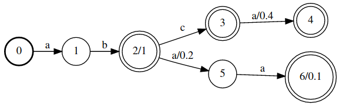
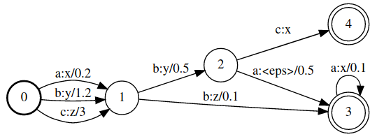
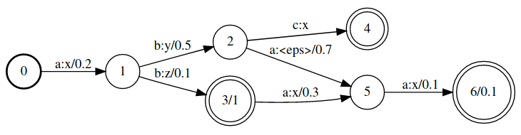
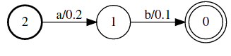
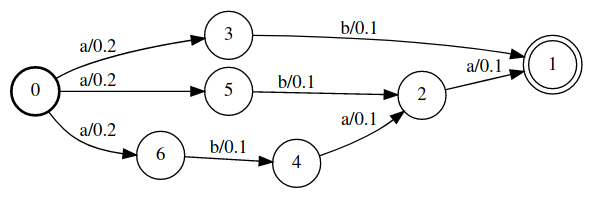
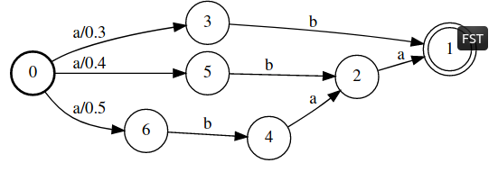

Finite State Machine
Installation
pip install openfst-python
Build Symbol Dictionary
import openfst_python as fst
printable_ST = fst.SymbolTable()
for c in [''] + list(string.printable):
printable_ST.add_symbol(c)
Finite State Acceptor (FSA)
compiler = fst.Compiler(isymbols=printable_ST,
osymbols=printable_ST,
keep_isymbols=True,
keep_osymbols=True)
print('0 1 a a',file=compiler)
print('1 2 b b',file=compiler)
print('2 3 c c',file=compiler)
print('3 4 a a 0.4',file=compiler)
print('2 5 a a 0.2',file=compiler)
print('5 6 a a',file=compiler)
print('2 1.0',file=compiler)
print('3',file=compiler)
print('4',file=compiler)
print('6 0.1',file=compiler)
inputFst = compiler.compile();
inputFst

Finite State Transducer (FST)
compiler = fst.Compiler(isymbols=printable_ST,
osymbols=printable_ST,
keep_isymbols=True,
keep_osymbols=True)
print('0 1 a x 0.2',file=compiler)
print('0 1 b y 1.2',file=compiler)
print('0 1 c z 3',file=compiler)
print('1 2 b y 0.5',file=compiler)
print('1 4 b z 0.1' ,file=compiler)
print('2 3 c x',file=compiler)
print('2 4 a 0.5' ,file=compiler)
print('4 4 a x 0.1',file=compiler)
print('3',file=compiler)
print('4',file=compiler)
modelFst = compiler.compile();
modelFst

Compose FSA with FST
fst.compose(inputFst.arcsort(), modelFst)

Shortest Path
modelFst1 = modelFst.copy().project()
fst.shortestpath(modelFst1)

N Best (Shortest) Paths
fst.shortestpath(modelFst1, nshortest=3, unique=3).rmepsilon()

Push Weights
nb = fst.push(fst.shortestpath(modelFst1,nshortest=3,unique=3).rmepsilon(),push_weights=True)
nb

References
- OpenFst Library
- openfst-python 1.7.3
- Weighted Automata Algorithms
- Learning Weighted Automata
- On Determinism and Unambiguity of Weighted Two-way Automata